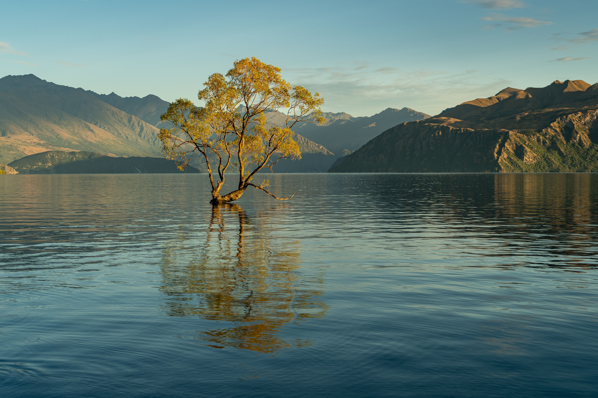
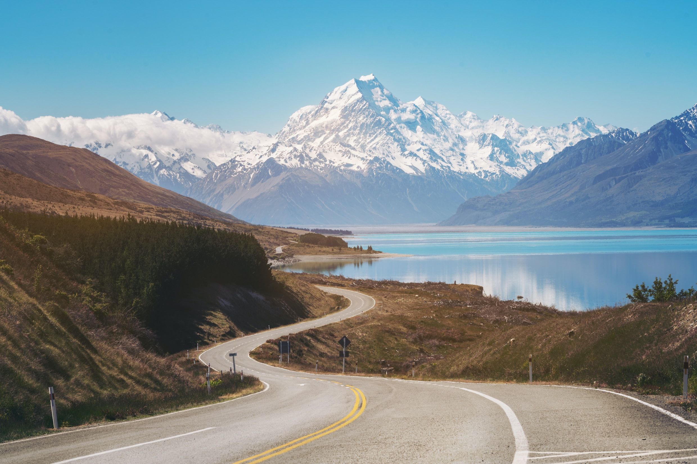

South Island

Milford Sound/Piopiotahi
Milford Sound is located at the northernmost end of Fiordland National Park on the South Island of New Zealand. Formed over time by the gradual erosion of ancient glaciers. The fiord stretches for 16km out to the Tasman Sea and is home to two permanent waterfalls the Lady Bowen Falls and Stirling Falls. Milford Sound is located at the northernmost end of Fiordland National Park on the South Island of New Zealand. Formed over time by the gradual erosion of ancient glaciers. The fiord stretches for 16km out to the Tasman Sea and is home to two permanent waterfalls the Lady Bowen Falls and Stirling Falls.

Lake Wanaka
Located in the spectacular alps of the South Island, New Zealand, visitors from around the world are drawn to the Wānaka region by its outstanding beauty. The stunning mountain and lakeside setting and proximity to Mt Aspiring National Park, a Unesco World Heritage Area, makes it the ultimate base for outdoor activities. With four distinct seasons, Wānaka is a year-round destination. Summers are hot and dry - perfect for water-sports, hiking and biking. Winters are cool and crisp with four diverse ski areas offering great options for skiers and snowboarders. Spring is the ideal time to get out and explore the lakeside tracks and trails, and the vibrant colours of autumn are perfect for photography.

Aoraki/Mount Cook
The Aoraki / Mount Cook National Park should be on every traveller’s bucket list. This World Heritage-listed alpine region boasts New Zealand's highest mountains and largest glaciers, with glaciers covering an impressive 40% of the park. Visitors can explore a variety of walking and cycling tracks, ranging from short strolls to challenging alpine hikes and Australisa’s best mountaineering. The park also forms part of New Zealand's only International Dark Sky Reserve, providing excellent views of the night sky, and features a variety of fantastic accommodation options, ranging from luxury to wallet-friendly options.